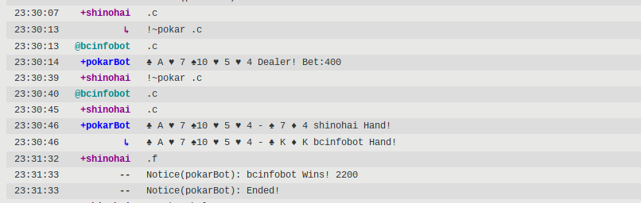

Weechat logs to html
weechat-log-to-html is a Haskell script that converts weechat logs to no-nonsense html. This addition to the /library/ is part of this years goal to excise as much pythonshit as possible from everything I use on a regular basis. Individuals that have Bitlbee hooked up to their weechat will be pleased to know that this script also beautifully parses things such as telegram or discord logs, for which no suitable logger (at least not one written in the aforementioned pythonshit or nodejs) can be found.
To use:
Compile the script using `ghc` - I used version 8.0.2 with good results. Then simply run something like the following:
./weechat-log-to-html < (weechatlog) > output.html
Example output:

Once verified that it works for you, you can simply add the script to a cronjob to monitor the irc channels and other chats you wish to log.